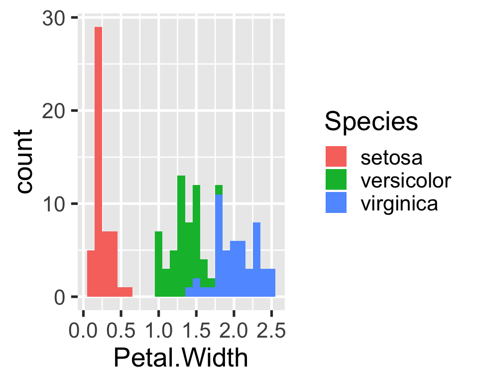

This package provides the raw data, analysis code, and outputs as well as the computational environment needed to reproduce the project/compendium “drakepkg”. The project uses the R package drake to define a reproducible processing pipeline linking inputs to outputs/targets similar to GNU make (for more information on the drake package, see here). This vignette describes how to reproduce the analysis, check the analysis pipeline, and inspect analysis steps and outputs.
library(drakepkg)
#> Loading required package: drake
copy_analysis()
#> Copying analysis directory structure...After attaching the package, executing the function copy_analysis() copies the analysis directory structure to the current working directory (or an explicitely specified directory). The directory should now contain the following files:
.
└── analysis
├── data
│ └── other-iris.xlsx
├── manuscript
│ └── report.html
└── templates
└── report.RmdThese files represent all input files required to reproduce the analysis as well as all output files generated in the process. The function further copies the .drake directory to the same directory. This hidden directory stores information about the consistency of the analysis pipeline and all intermediate outputs.
Reproducing the analysis can be done in a two-step procedure:
reproduce_analysis() copies the analysis directory structure (if it isn’t already present) and then runs drake::make(). The output provides evidence of reproducibility without actually re-running the analysis. If the analysis is reproducible, the output should look like this:reproduce_analysis()
#> Reproducing analysis included in package 'drakepkg':
#> Analysis directory structure is already in place.
#> Checking consistency of provided analysis...
#> All targets are already up to date.reproduce_analysis() with the option re_run = TRUE. This will delete the copied .drake folder and re-run the entire project from scratch, re-creating all relevant intermediate steps and outputs.Executing get_plan() returns the underlying drake plan used to run the analysis. The returned tibble lists all intermediate results (targets), the commands executed to create them, and the dependencies between them.
plan <- get_plan()
plan
#> # A tibble: 5 x 2
#> target command
#> <chr> <chr>
#> 1 raw_data "readxl::read_excel(file_in(\"analysis/data/other-iris.xlsx\…
#> 2 ready_data dplyr::mutate(raw_data, Species = forcats::fct_inorder(Speci…
#> 3 hist create_plot(ready_data)
#> 4 fit lm(Sepal.Width ~ Petal.Width + Species, ready_data)
#> 5 report "rmarkdown::render(knitr_in(\"analysis/templates/report.Rmd\…The drake package provides several ways to visualize the project, e.g.
Furthermore, drake provides functions for viewing individual targets (drake::readd()) or load them into the current environment (drake::loadd()). For example, to view the cleaned data frame, use
readd(ready_data) %>%
head()
#> # A tibble: 6 x 5
#> Sepal.Length Sepal.Width Petal.Length Petal.Width Species
#> <dbl> <dbl> <dbl> <dbl> <fct>
#> 1 5.1 3.5 1.4 0.2 setosa
#> 2 4.9 3 1.4 0.2 setosa
#> 3 4.7 3.2 1.3 0.2 setosa
#> 4 4.6 3.1 1.5 0.2 setosa
#> 5 5 3.6 1.4 0.2 setosa
#> 6 5.4 3.9 1.7 0.4 setosaor to view the figure included in the report, use

Executing delete_analysis() removes the analysis and .drake directories from the working directory (or an explicitely specified directory).